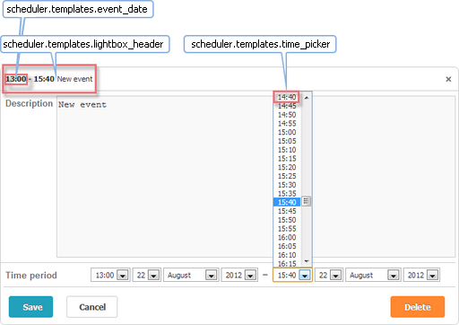
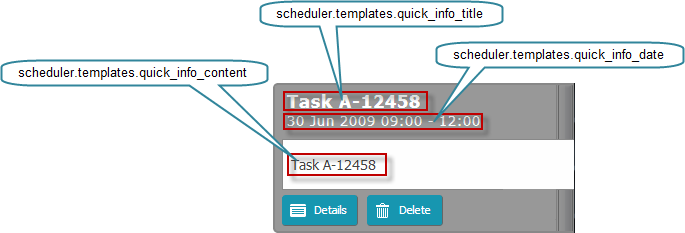
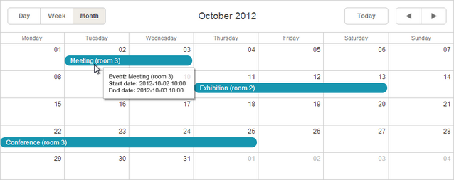

In this article you will find descriptions of templates which are common for all views. To get full information about a template, follow the corresponding link.
You can customize the event's text and color with the help of templates. The details are given in the articles:

time_picker - the drop-down time selector in the lightbox
scheduler.templates.time_picker =
scheduler.date.date_to_str(scheduler.config.hour_date);
lightbox_header - the lightbox header
scheduler.templates.lightbox_header = function(start,end,ev){
return scheduler.templates.event_header(ev.start_date,ev.end_date,ev)
+ scheduler.templates.event_bar_text(ev.start_date,ev.end_date,ev);
};
where:
start - (Date) the date when an event is scheduled to begin
end - (Date) the date when an event is scheduled to be completed
event - (object) the event object
event_date - specifies the time part of the start and end dates of the event. Mostly used by other templates for presenting time periods
scheduler.templates.event_date = function(date){
var formatFunc = scheduler.date.date_to_str(scheduler.config.hour_date);
return formatFunc(date);
}
where:
date - (Date) the date which needs formatting
The library has a 'quick info' extension to provide the touch support in the scheduler.
The extension supplies 3 templates:

quick_info_content - the content of the pop-up edit form
scheduler.templates.quick_info_content = function(start, end, ev){
return ev.details || ev.text;
};
quick_info_date - the date of the pop-up edit form
scheduler.templates.quick_info_date = function(start, end, ev){
if (scheduler.isOneDayEvent(ev)){
return scheduler.templates.day_date(start, end, ev) + " " +
scheduler.templates.event_header(start, end, ev);
}else{
return scheduler.templates.week_date(start, end, ev);
}
};
quick_info_title - the title of the pop-up edit form
scheduler.templates.quick_info_title = function(start, end, ev){
return ev.text.substr(0,50);
};
Parameters for touch support templates:
start - (Date) the date when an event is scheduled to begin
end - (Date) the date when an event is scheduled to be completed
event - (object) the event object
You have the possibility to create tooltips over events, regardless of the type of a view. This can be used to display additional event information, without the need of 'opening' the event.
To take the possibility, include the tooltip extension file (ext/dhtmlxScheduler_tooltip.js) on the page.

tooltip_date_format - the format of start and end dates used by the tooltip_text template
scheduler.templates.tooltip_date_format=function (date){
var formatFunc = scheduler.date.date_to_str("%Y-%m-%d %H:%i");
return formatFunc(date);
}
where:
date - (Date) the date which needs formatting
tooltip_text - the text of tooltips
scheduler.templates.tooltip_text = function(start,end,ev){
return "<b>Event:</b> "+ev.text+"<br/><b>Start date:</b> " +
scheduler.templates.tooltip_date_format(start)+
"<br/><b>End date:</b> "+scheduler.templates.tooltip_date_format(end);
};
where:
start - (Date) the date when an event is scheduled to begin
end - (Date) the date when an event is scheduled to be completed
event - (object) the event object
api_date - the format for dates that are set by means of API methods. Used to parse incoming dates
scheduler.templates.api_date = function(date){
return scheduler.date.str_to_date(scheduler.config.api_date);
};
load_format - the format of requests in the dynamic loading mode
scheduler.templates.load_format = function(date){
var dateToStr_func = scheduler.date.date_to_str(scheduler.config.load_date);
return dateToStr_func(date);
}
parse_date - a string from an XML file is converted into a date object in conformity with this template
var cfg = scheduler.config;
var strToDate = scheduler.date.str_to_date(cfg.date_format, cfg.server_utc);
scheduler.templates.parse_date = function(date){
return strToDate (date);
};
format_date - a date object is converted into a string, in conformity with this template. Used to send data back to the server
var dateToStr = scheduler.date.date_to_str("%Y-%m-%d %H:%i");
scheduler.templates.format_date = function(date){
return dateToStr (date);
};
Parameter for the listed API templates:
date - (Date) the date which needs formatting
scheduler.templates.{viewName}_date - specifies the date in the header of the view
Depending on the view type, the template function takes as parameters either:
date - (Date) the date which needs formatting (for Day, Month, Year, Units views and Mini Calendar):
scheduler.templates.day_date = function(date){
var formatFunc = scheduler.date.date_to_str(scheduler.config.default_date);
return formatFunc(date);
};
or:
start - (Date) the start date of the view
end - (Date) the end date of the view
(for Week, Agenda, Grid, Map and Timeline views):
scheduler.templates.week_date = function(start, end){
return scheduler.templates.day_date(start)+" – "+
scheduler.templates.day_date(scheduler.date.add(end,-1,"day"));
};
scheduler.templates.{viewName}_scale_date - specifies the date of a day cell of the view (the items of the X-Axis for Timeline view, the day name in the week sub-header of the Mini Calendar)
Used in Day, Week, Year, Timeline views and Mini Calendar
scheduler.templates.day_scale_date = function(date){
return scheduler.date.date_to_str(scheduler.config.default_date);
};
where:
date - (Date) the date which needs formatting